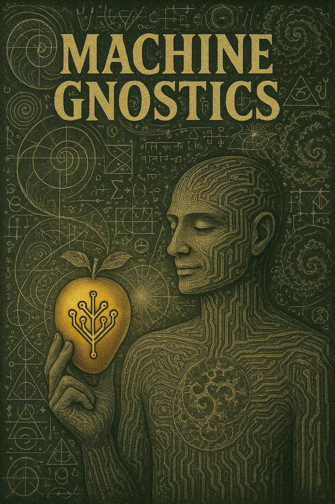

Machine Gnostics
Welcome to Machine Gnostics, an innovative Python library designed to implement the principles of Machine Gnostics for robust data analysis, modeling, and inference. Unlike traditional statistical approaches that depend heavily on probabilistic assumptions, Machine Gnostics harnesses deterministic algebraic and geometric structures. This unique foundation enables the library to deliver exceptional resilience against outliers, noise, and corrupted data, making it a powerful tool for challenging real-world scenarios.
Machine Gnostics is an open-source initiative that seeks to redefine the mathematical underpinnings of machine learning. While most conventional ML libraries are grounded in probabilistic and statistical frameworks, Machine Gnostics explores alternative paradigms—drawing from deterministic algebra, information theory, and geometric methods. This approach opens new avenues for building robust, interpretable, and reliable analysis tools that can withstand the limitations of traditional models.
Note
As a pioneering project, Machine Gnostics invites users to adopt a fresh perspective and develop a new understanding of machine learning. The library is currently in its infancy, and as such, some features may require refinement and fixes. We are actively working to expand its capabilities, with new models and methods planned for the near future. Community support and collaboration are essential to realizing Machine Gnostics’ full potential. Together, let’s build a new AI grounded in a rational and resilient paradigm.

Overview
Machine Gnostics offers a comprehensive suite of tools for robust analysis:
- Robust Regression Models – Polynomial regression models with gnostic-based weighting for optimal resilience to outliers
- Gnostic Metrics – Alternative evaluation metrics that provide more reliable performance assessment in the presence of corrupted data
- Mathematical Gnostics Calculations – Core implementations of gnostic statistics including robust measures of central tendency, dispersion, and correlation
Key Features
- 🛡️ Exceptional Outlier Resistance – Automatically detects and downweights anomalous observations without manual intervention
- 🔍 Information-Theoretic Foundation – Based on rigorous mathematical principles rather than probabilistic assumptions
- 🔧 Drop-in Replacements – Use gnostic alternatives to common statistical measures like mean, median, correlation
- 📊 MLflow Integration – Seamless model tracking, versioning, and deployment
- 🧪 Scientifically Validated – Tested on real-world problems across multiple domains including thermodynamics, materials science, and engineering
References
Books
- Kovanic P., Humber M.B.: The Economics of Information-Mathematical Gnostics for Data Analysis, book 717 pp., 2015
- Kovanic P., Mathematical Gnostics, 2023, DOI: 10.1201/9780429441196
Research Papers
- Parmar, N., Bendová, M. & Wagner, Z. Heat capacity measurements by a Setaram μDSC3 evo microcalorimeter: estimation of deviation in the measurement, advanced data analysis by mathematical gnostics, and prediction by the artificial neural network. J Therm Anal Calorim 150, 313–325 (2025). https://doi.org/10.1007/s10973-024-13505-w
- Nirmal Parmar, Magdalena Bendová, Zdeněk Wagner, Věra Pěnkavová, Ilias Douihri, and Johan Jacquemin, Carbon Nanotube-Based Ionanofluids for Efficient Energy Storage: Thermophysical Properties’ Determination and Advanced Data Analysis, Industrial & Engineering Chemistry Research 2021 60 (20), 7714-7728 DOI: 10.1021/acs.iecr.0c06008
- Parmar, N. et. al, A study of changes in the heat capacity of carbon nanotube-based ionanofluids prepared from a series of imidazolium ionic liquids, https://doi.org/10.1039/D2CP02110B
- Zdenek Wagner, Magdalena Bendova, Jan Rotrekl, Adela Sykorova, Maja Canji, Nirmal Parmar, Density and sound velocity measurement by an Anton Paar DSA 5000 density meter: Precision and long-time stability, J Mol Liq, Volume 329, 2021, 115547, ISSN 0167-7322
- Zdenek Wagner, Magdalena Bendova, Jan Rotrekl, Nirmal Parmar, Stanislav Kocı and Pavel Vrbka Thermochemical Properties of Menthol and Terpineol. J Solution Chem 49, 1267–1278, 2020